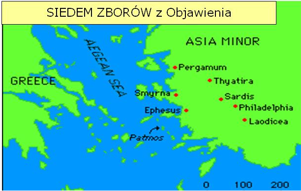

Rozdział 1
„Objawienie Jezusa Chrystusa, które dał mu Bóg, aby ukazać sługom swoim to, co ma się stać wkrótce; to też wyjawił On za pośrednictwem zesłanego anioła swojego słudze swemu Janowi, (2) który dał świadectwo Słowu Bożemu i zwiastowaniu Jezusa Chrystusa, wszystkiemu, co w widzeniu oglądał. (3) Błogosławiony ten, który czyta, i ci, którzy słuchają słów proroctwa i zachowują to, co w nim jest napisane; czas bowiem jest bliski. (4) Jan do siedmiu zborów, które są w Azji: Łaska wam i pokój od tego, który jest i który był, i który ma przyjść, i od siedmiu duchów, które są przed jego tronem, (5) i od Jezusa Chrystusa, który jest świadkiem wiernym, pierworodnym z umarłych i władcą nad królami ziemskimi. Jemu, który miłuje nas i który wyzwolił nas z grzechów naszych przez krew swoją, (6) i uczynił nas rodem królewskim, kapłanami Boga i Ojca swojego, niech będzie chwała i moc na wieki wieków. Amen. (7) Oto przychodzi wśród obłoków, i ujrzy go wszelkie oko, a także ci, którzy go przebili, i będą biadać nad nim wszystkie plemiona ziemi. Tak jest! Amen. (8) Jam jest alfa i omega (początek i koniec), mówi Pan, Bóg, Ten, który jest i który był, i który ma przyjść, Wszechmogący. (9) Ja, Jan, brat wasz i uczestnik w ucisku i w Królestwie, i w cierpliwym wytrwaniu przy Jezusie, byłem na wyspie, zwanej Patmos, z powodu zwiastowania Słowa Bożego i świadczenia o Jezusie. (10) W dzień Pański popadłem w zachwycenie i usłyszałem za sobą głos potężny, jakby trąby, który mówił: (11) To, co widzisz, zapisz w księdze i wyślij do siedmiu zborów: do Efezu i do Smyrny, i do Pergamonu, i do Tiatyry, i do Sardes, i do Filadelfii, i do Laodycei. (12) I obróciłem się, aby zobaczyć, co to za głos, który mówił do mnie; a gdy się obróciłem, ujrzałem siedem złotych świeczników, (13) a pośród tych świeczników kogoś podobnego do Syna Człowieczego, odzianego w szatę do stóp długą i przepasanego przez pierś złotym pasem; (14) głowa zaś jego i włosy były lśniące jak śnieżnobiała wełna, a oczy jego jak płomień ognisty, (15) a nogi jego podobne do mosiądzu w piecu rozżarzonego, głos zaś jego jakby szum wielu wód. (16) W prawej dłoni swej trzymał siedem gwiazd, a z ust jego wychodził obosieczny ostry miecz, a oblicze jego jaśniało jak słońce w pełnym swoim blasku. (17) Toteż gdy go ujrzałem, padłem do nóg jego jakby umarły. On zaś położył na mnie swoją prawicę i rzekł: Nie lękaj się, Jam jest pierwszy i ostatni, (18) i żyjący. Byłem umarły, lecz oto żyję na wieki wieków i mam klucze śmierci i piekła. (19) Napisz więc, co widziałeś i co jest, i co się stanie potem. (20) Co do tajemnicy siedmiu gwiazd, które widziałeś w prawej dłoni mojej, i siedmiu złotych świeczników: siedem gwiazd, to aniołowie siedmiu zborów, a siedem świeczników, to siedem zborów.” (Objawienie 1:1-20).
Gdyby komuś, podobnie jak zwodzą swych wyznawców świadkowie Jehowy, przyszło do głowy, że słowa „i uczynił nas rodem królewskim, kapłanami Boga i Ojca swojego” odnoszą się do „elitarnej” grupy „lepszych owiec”, tzw. „pomazańców” – 144 tysięcy”, itp., a nie do wszystkich dzieci Bożych bez wyjątku, to niech zwróci uwagę, że już wcześniej te same słowa wypowiedział Bóg do Izraelitów zgromadzonych pod masywem Synaju:
„A teraz, jeżeli pilnie słuchać będziecie głosu mojego i przestrzegać mojego przymierza, będziecie szczególną moją własnością pośród wszystkich ludów, bo moja jest cała ziemia. (6) A wy będziecie mi królestwem kapłańskim i narodem świętym.” (2 Mojżesza 19:5-6).
Słowa te Bóg skierował do WSZYSTKICH Izraelitów (pod górą było ich około 2-3 mln razem z kobietami i dziećmi), a nie tylko do „WYBRANYCH” kapłanów!
Lecz żydzi, jako całość zawiedli Boga i w każdym czasie tylko wierna Bogu „reszta” spełniała Jego oczekiwania.
Dopiero Chrystus, który zabrał nasze grzechy i zgładził je na Golgocie, pojednał nas z Ojcem, a poprzez akt nowonarodzenia uczynił nas dziećmi Bożymi, członkami Bożej Rodziny.
Jesteśmy dziećmi Króla, królewskim rodem, a równocześnie kapłanami, wielbiącymi Boga w "duchu i prawdzie", poprzez słuchanie i naśladowanie Jedynego pośrednika i najwyższego Kapłana według porządku Melchizedeka - Jehoszua.
Słowo „święty” (gr. hagios) znaczy po prostu: rożny, odmienny, odłączony.
To, że chodzi o wszystkich wybranych, nie tylko grupkę 144 tysięcy, potwierdził apostoł Piotr:
„Ale wy jesteście rodem wybranym, królewskim kapłaństwem, narodem świętym, ludem nabytym, abyście rozgłaszali cnoty tego, który was powołał z ciemności do cudownej swojej światłości; (10) wy, którzy niegdyś byliście nie ludem, teraz jesteście ludem Bożym, dla was niegdyś nie było zmiłowania, ale teraz zmiłowania dostąpiliście.” (1 Piotra 2:9-10).
Żal mi ludzi, którzy świadomie nie chcą się do tej grupy zaliczać, no cóż wolą słuchać bardziej ludzi, niż Boga…
Wszystkich chrześcijan Chrystus ustanowił „królewskim kapłaństwem, narodem świętym”.
Królowanie z Chrystusem to współudział w Jego dobrach i w chwale (choć na razie wyłącznie w sferze duchowej):
„A jeśli dziećmi, to i dziedzicami, dziedzicami Bożymi, a współdziedzicami Chrystusa, jeśli tylko razem z nim cierpimy, abyśmy także razem z nim uwielbieni byli.” (Rzymian 8:17).
„Już jesteście nasyceni; już wzbogaciliście się; bez nas staliście się królami. I obyście byli królami, abyśmy i my wespół z wami królowali.” (1Koryntian 4:8).
„Królowanie na ziemi”, to wykonywanie misji Chrystusowej, tzn. służby wobec wszystkich nieznających Go.
Tym królującym na ziemi, a jednak w duchowym Królestwie Bożym, był na przykład Jan, który pisał o sobie:
„uczestnik w ucisku i w Królestwie, i w cierpliwym wytrwaniu przy Jezusie” (Objawienie 1:9).
Jehoszua dał nam doskonały przykład - choć Sam był Królem (Jana 1:49), przyszedł na ziemię innym służyć (Marka 10:45). Tak samo ma wyglądać nasze królowanie dziś!
Siedem duchów (1:4).
„przed tronem zaś płonęło siedem ognistych pochodni; jest to siedem duchów Bożych.” (Objawienie 4:5).
„To mówi Ten, który ma siedem duchów Bożych i siedem gwiazd” (Objawienie 3:1).
„I widziałem pośrodku między tronem a czterema postaciami i pośród starców stojącego Baranka jakby zabitego, który miał siedem rogów i siedmioro oczu; a to jest siedem duchów Bożych zesłanych na całą ziemię.” (Objawienie 5:6).
„ponieważ upodobał sobie Bóg, żeby w nim zamieszkała cała pełnia boskości” (Kolosa 4:19).
Z woli Ojca, w Synu, zamieszkała cała pełnia boskości.
Siedem wyraża pełnię, a prorok Izajasz wskazuje nam, o jakie siedem przymiotów ducha, czyli inaczej „duchów” chodzi:
„I spocznie na nim Duch Pana; Duch mądrości i rozumu, Duch rady i mocy, Duch poznania i bojaźni Pana.” (Izajasza 11:2).
Miecz (1:20).
„weźcie też przyłbicę zbawienia i miecz Ducha, którym jest Słowo Boże.” (Efezjan 6:17).
„Bo Słowo Boże jest żywe i skuteczne, ostrzejsze niż wszelki miecz obosieczny” (Hebrajczyków 4:12).
Miecz to zdecydowanie Słowo Boże - Biblia.
Postać (1:13-17).
Szata Syna Człowieczego wskazuje na jego arcykapłańską godność (2 Mojżesza 28:4; 29:5; Hebrajczyków 7:21).
Biel symbolizuje sprawiedliwość, mądrość, czystość, dostojeństwo (Daniela 7:9; Izajasza 1:18; 3 Mojżesza 19:32; Przysłów 16:31).
Ognistość jest symbolem stanu serca - zaangażowania, nieobojętności, gorliwości (1 Samuela 16:7).
Głos jak szum wielu wód lub jak szum wodospadów jest symbolem potęgi i nieodpartej, zagłuszającej wszystko siły.
Wszystko wskazuje na to, że postacią, która ukazała się prorokowi Danielowi blisko 600 lat przed naszą erą był Syn Boży - Jehoszua. Porównaj opis wyglądu Jehoszua z księgi Objawienia 1:12-17 z opisem postaci w księdze Daniela 10:5-9, 12-13. Są IDENTYCZNE.
Siedem gwiazd i aniołów (1:16).
„siedem gwiazd, to aniołowie siedmiu zborów, a siedem świeczników, to siedem zborów.” (1:20).
Słowo „anioł” (gr. angelos) znaczy tyle, co „poseł” czy „wysłannik”. Dlatego, należy raczej zwracać tu uwagę na zwiastowane przez wybrane dzieci Boże poselstwo Ewangelii mieszkańcom ziemi.
„I widziałem innego anioła, lecącego przez środek nieba, który miał ewangelię wieczną, aby ją zwiastować mieszkańcom ziemi i wszystkim narodom, i plemionom, i językom, i ludom, który mówił donośnym głosem” (Objawienie 14:6).
Każdy czas, okres historii, ma swoje szczególne potrzeby, i właśnie na te potrzeby muszą odpowiedzieć posłańcy Boży.
W tym kontekście siedem poselstw do „siedmiu aniołów”, to siedem przestróg dla członków ciała Chrystusa, a więc ludu Bożego w siedmiu okresach, czyli w całej jego doczesnej historii.
Siedem zborów (1:20).
Dlaczego występuje akurat liczba siedmiu zborów?
Liczba 7 wielokrotnie występująca w ogóle w Piśmie Świętym jak i w księdze Objawienia – była stosowana dla określenia świętej pełni. Tym samym zwracając się do „siedmiu zborów” azjatyckich (Efez, Smyrna, Pergamon, Tjatyra, Sardes, Filadelfia, Laodycea) Jan zwraca się nie tylko do chrześcijan tych zborów, lecz przemawia do całego ludu Chrystusowego. W owym wszak czasie istniało wiele innych zborów, zarówno w Azji (zbory w Jerozolimie czy w Galacji), jak i w Europie (Rzym, Korynt, Filippia, i dalsze).
W każdym z tych listów pojawia się kluczowa fraza: „Kto ma uszy, niechaj posłyszy, co mówi Duch do Kościołów”.
Zwróć uwagę na liczbę mnogą - kościołów. Każdy z tych listów odnosi się do wszystkich kościołów/zborów istniejących w danym okresie historii.
Te listy opisują, z dużą dokładnością, rozwój historii kościoła.
Niesamowite jest również to, jak greckie nazwy tych miast (zborów) komponują się z wydarzeniami historycznymi danego okresu (zboru).
„Siedem Zborów” zatem, przedstawia nam siedem okresów historycznych – od początku istnienia Kościoła Chrystusowego aż do powrotu naszego Pana.

↞ Spis treści
kopia strony: https://jehoszua.ddv.pl/readarticle.php?article_id=28 Wszelkie prawa autorskie należą się autorowi tej strony
z1c47b28afcz